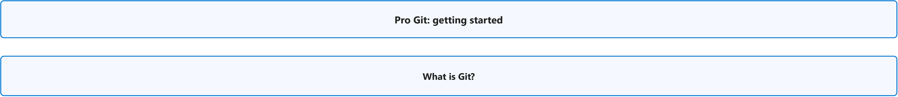
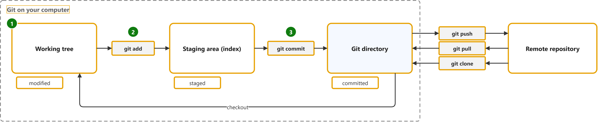

Pro Git: Getting Started
Study notes on Scott Chacon and Ben Straub, Pro Git, 2nd edition. Each section links the official page it follows. Start from the figure: the framed terms are the ones to learn, and the table below it defines them in the same order, each with a citation linked to the passage and a Chinese translation in which each key word has the same colour as in the English. The main verb of each sentence has a red wavy underline, in the English and in the Chinese.
Overview

What is Git?

| Term | Definition | 中文翻译 | Source |
|---|---|---|---|
| Git Git 版本控制 |
"Git is a free and open source distributed version control system designed to handle everything from small to very large projects with speed and efficiency." | Git 是一个免费且开源的分布式版本控制系统，旨在处理从小型到超大型的各种项目，并做到快速、高效。 | Git, n.d., para. 1 |
| working tree 工作区 |
"The working tree is a single checkout of one version of the project. These files are pulled out of the compressed database in the Git directory and placed on disk for you to use or modify." | 工作区是项目某一版本的单次检出。这些文件从 Git 目录中的压缩数据库中提取出来，放在磁盘上供你使用或修改。 | Chacon, 2014, "The Three States" section, para. 3 |
| modified 已修改 |
"Modified means that you have changed the file but have not committed it to your database yet." | 已修改表示你已更改文件，但尚未将其提交到数据库。 | Chacon, 2014, "The Three States" section, bullet 1 |
| git add git add 暂存 |
"Add contents of new or changed files to the index. The "index" (also known as the "staging area") is what you use to prepare the contents of the next commit." | 将新文件或已更改文件的内容添加到索引中。“索引”（也称为“暂存区”）是你用来准备下一次提交内容的地方。 | Git, n.d., "DESCRIPTION" section, para. 1 |
| staging area (index) 暂存区 |
"The staging area is a file, generally contained in your Git directory, that stores information about what will go into your next commit. Its technical name in Git parlance is the "index"..." | 暂存区是一个文件，通常位于你的 Git 目录中，存储着有关下一次提交将包含哪些内容的信息。用 Git 的术语来说，它的技术名称是“索引”…… | Chacon, 2014, "The Three States" section, para. 4 |
| staged 已暂存 |
"Staged means that you have marked a modified file in its current version to go into your next commit snapshot." | 已暂存表示你已将修改过的文件的当前版本标记为要放入下一次提交快照中。 | Chacon, 2014, "The Three States" section, bullet 2 |
| commit 提交 |
"With Git, every time you commit, or save the state of your project, Git basically takes a picture of what all your files look like at that moment and stores a reference to that snapshot." | 在 Git 中，每当你提交，或者说保存你的项目状态时，Git 基本上会为你所有文件在那一刻的样子拍一张照片，并存储对该快照的一个引用。 | Chacon, 2014, "Snapshots, Not Differences" section, para. 2 |
| Git directory Git 目录（本地仓库） |
"The Git directory is where Git stores the metadata and object database for your project. This is the most important part of Git, and it is what is copied when you clone a repository from another computer." | Git 目录是 Git 存储项目元数据和对象数据库的地方。这是 Git 最重要的部分，也是你从另一台计算机克隆仓库时所复制的内容。 | Chacon, 2014, "The Three States" section, para. 5 |
| committed 已提交 |
"Committed means that the data is safely stored in your local database." | 已提交表示数据已安全地存储在本地数据库中。 | Chacon, 2014, "The Three States" section, bullet 3 |
| remote repository 远程仓库 |
"A repository which is used to track the same project but resides somewhere else. To communicate with remotes, see fetch or push." | 一个用于跟踪同一项目、但位于其他位置的仓库。要与远程仓库通信，请参阅 fetch 或 push。 | Git, n.d., "remote repository" entry |
| push 推送 |
"When you have your project at a point that you want to share, you have to push it upstream." | 当你的项目进展到你想要分享的程度时，你必须将它推送到上游。 | Chacon, 2014, "Pushing to Your Remotes" section, para. 1 |
| pull 拉取 |
"Pulling a branch means to fetch it and merge it." | 拉取一个分支意味着获取它并合并它。 | Git, n.d., "pull" entry |
| clone 克隆 |
"If you want to get a copy of an existing Git repository — for example, a project you’d like to contribute to — the command you need is git clone." | 如果你想获取一个现有 Git 仓库的副本——例如，一个你想参与贡献的项目——你需要的命令是 git clone。 | Chacon, 2014, "Cloning an Existing Repository" section, para. 1 |